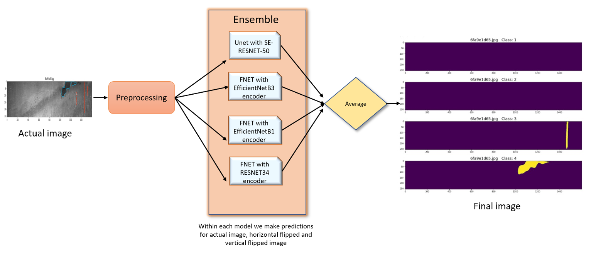

Automated Defect Detection
- Tech Stack: Python, Tensorflow, Pandas, Keras, Pytorch, Neural Network
- Collaborators: Arish Yaseen Mohammad Farzanullah
- Github URL: Project Link
- Paper: Here
Introduction
In the steel industry, there has been emphasis on the use of deep learning techniques to detect defects. This would increase the efficiency, improve automation, and will lead to high quality production of steel. In the traditional production process of steel materials, localizing and classifying surface defects manually on a steel sheet is inefficient and error prone. Therefore, it’s a key challenge to achieve automated detection of steel surface defects in image pixel level, leaving an urgent and critical issue to be addressed. In this paper, we aim to increase the efficiency and enhancing the automation in detecting steel defects while maintaining the high quality in steel production by applying a series of deep learning algorithms of real-time semantic segmentation, utilizing neural networks with encoder-decoder architectures based on U-Net and feature pyramid network (FPN). The image dataset of steel defects is provided by Severstal, the largest steel company in Russia, through a featured code competition in the Kaggle community.
Results:
The results show that the ensemble algorithm of several neural networks with encoder decoder architectures has a decent performance regarding segmentation accuracy. Our machine learning algorithms achieve dice coefficients of 0.89901 and 0.90350 on the private test set and public test set on the Kaggle platform, respectively, which locates at the top 10% among all teams in the competition.
